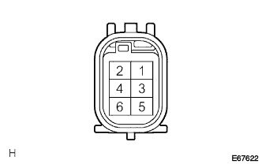

Smart Door Tsukushi System Do not lock from the door of the passenger seat |
| Step 1 | Inspection whether the door is locked by manual operation |
When the door control switch (for manual operation) is operated on the lock side, all doors are locked, and when operated on the unlock side, all doors are checked.
|
| ||||
| OK | |
| Step 2 | Front door out -side handle ASSY LH single inspection |
|  |
Trigger switch conductor inspection
Use SST (Toyota Electrical Tester) to check the conjunction between the connector 3 (TRG+) terminal ← → 1 (TRG-) when the trigger switch is operated.
| Switch operation | standard |
|---|---|
| When the switch is not operated | 10kΩ or higher |
| When pressing the switch | Less than 1Ω |
|
| ||||
| OK | |
| Step 3 | Electric key wire harness single check (TRG+, TRG-) |
 |
Connector A ← → Connector B interconception inspection
Separate the connector A and B of the electric key wire harness.
Using SST (Toyota Electrical Tester), check the conjunction between the electrical key wire harness connector A ← → connectors B of each terminal.
| Measuring terminal (Connector A ← → Connector B) | standard |
|---|---|
| 2 (TRG+) ← → 3 (TRG+) | Less than 1Ω |
| 1 (TRG-) ← → 1 (TRG-) | Less than 1Ω |
|
| ||||
| OK | |
| Step 4 | Wire harness inspection |
Smart Key Compieta ASSY ← → Electric Charcal Key Wire Harness (Connector A) Wire Harness Inspection Inspection
Cut the connector A of the smart key compiya ASSY and the electrical key wire harness.
Use SST (Toyota Electrical Tester) to check the conversation between the smart key computa asy ← → the electric key wire harness terminal.
| Measuring terminal (Body ECU ← → Connector A) | standard |
|---|---|
| 7 (TSW2) ← → A2 (TRG+) | Less than 1Ω |
| 40 (E) ← → A1 (TRG-) | Less than 1Ω |
Smart Key Compieta ASSY ← → Body Earth Inspection Inspection
Cut off the connector of the Smart Key Compieta ASSY.
Use SST (Toyota Electrical Tester) to check the conduction between the vehicle side wire harness connector 20 (GND) terminal (GND) terminal ← → body grounding.
|
| ||||
| OK | ||
| ||